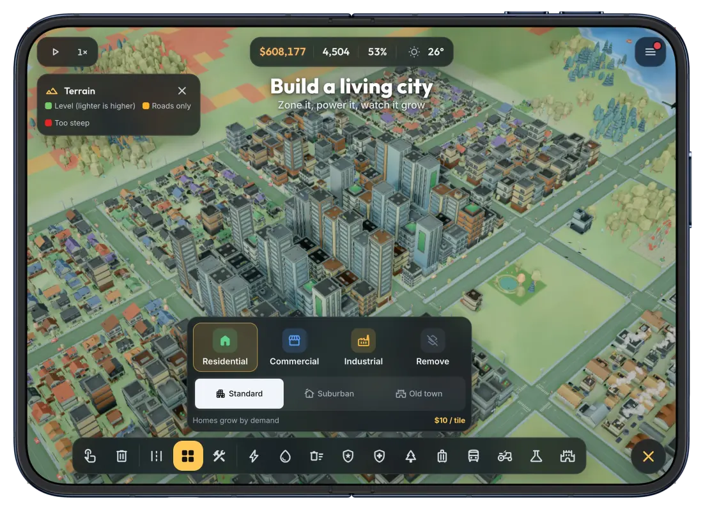

Ta ville, tes règles : zone les quartiers, garde les lumières allumées malgré les canicules et les grands froids, nourris tes habitants et regarde la circulation prendre vie.
Transforme une simple route poussiéreuse en métropole florissante.
Boomtown est un city builder relaxant mais profond. Peins des maisons, des commerces et des usines, relie l'électricité et l'eau, et regarde tes habitants emménager, fonder des familles, faire leurs trajets domicile-travail et te dire exactement ce qu'ils pensent.
Construis une ville vivante
Zone-la, alimente-la, regarde-la grandir
Chaque voiture a une destination : les navetteurs choisissent leur itinéraire, les bouchons se forment aux heures de pointe, et de meilleures routes ou lignes de bus et de train les résolvent.
Zones résidentielles, commerciales et industrielles, dans les styles standard, banlieue et vieille ville.
Grandis du hameau au village, à la ville, puis jusqu'à la mégalopole.
Fusionnez un pâté entier de neuf parcelles en un gratte-ciel de niveau 4.
Une ville bien vivante
Parcs, cafés et mille petits détails
Des parcs avec étangs, fontaines, allées et bancs, plus des arbres et des parterres que vous plantez vous-même.
Les arbres ondulent au vent, le linge flotte les jours de soleil et les cafés sortent leurs terrasses.
La nuit, les vitrines restent allumées, les panneaux publicitaires brillent et les feux passent du rouge à l'orange puis au vert.
Vaches et moutons paissent dans les fermes, les cheminées fument et, au crépuscule, réverbères et phares s'allument.
Les maisons et commerces qui durent des années se couvrent de lierre et reçoivent une plaque de patrimoine.
Trams, bus et métro
Tracez les lignes, regardez-les se remplir
Cliquez le long de vos routes pour tracer des lignes de bus et de tram, les arrêts se placent en chemin.
Les lignes de métro creusent des tunnels sous la ville, avec des entrées sur n'importe quel trottoir.
Les foyers sans voiture marchent ou prennent les transports, avec une correspondance possible.
Chaque saison compte
La neige, les canicules et les tempêtes changent le fonctionnement de ta ville
Les canicules font grimper la demande de climatisation, les grands froids exigent du chauffage.
Les nuages assombrissent tes fermes solaires, les tempêtes font tourner tes éoliennes.
En hiver, la neige recouvre la ville, en automne les arbres prennent des teintes dorées, en été les récoltes battent leur plein.
Les nouvelles villes suivent les saisons de ton hémisphère grâce au calendrier « Local », activé par défaut.
Des générations qui grandissent
Les habitants naissent, vieillissent et transmettent
Chaque foyer compte enfants, parents et grands-parents qui vieillissent d'année en année, et les jeunes adultes déménagent pour fonder leur propre foyer.
Les crèches font grimper la natalité, les médecins l'espérance de vie, les écoles se remplissent et se vident, et les cimetières manquent peu à peu de place.
Fixe l'âge de la retraite et le congé parental, puis regarde ta pyramide des âges évoluer dix ans plus tard.
Fermes, mines et commerce
Cultive, vends les surplus, creuse le minerai
Les fermes nourrissent tes habitants : vends le surplus, stockes-en une partie dans une réserve alimentaire ou paie des importations.
Les mines extraient le minerai des montagnes jusqu'à épuisement du filon.
L'industrie de pointe s'installe dès que ta ville est bien éduquée.
Vois ce dont tes habitants ont besoin
Les cartes de données révèlent circulation, pollution et valeur foncière
Les habitants jugent tout : emploi, trajets, sécurité, écoles, parcs, bruit, pollution et coût de la vie.
Touche un bâtiment pour voir comment il se porte et pourquoi il ne se développe pas.
Cartes de données adaptées au daltonisme.
Fais de ta ville une destination
Monuments, vieilles villes et rues piétonnes attirent les visiteurs
Une grande roue, un stade, un opéra, la Sky Tower et d'autres attirent les touristes, et un aéroport les fait arriver par avions entiers.
Les hôtels perçoivent une taxe de séjour. Quand ils sont pleins, les visiteurs louent des appartements dans lesquels tes habitants ne peuvent plus vivre.
Les foules apportent criminalité, bruit et loyers en hausse ; limite donc les locations de courte durée ou double la taxe de séjour.
Et bien plus encore
Profond quand tu le souhaites
Circulation & transports
Chaque voiture choisit son itinéraire. Les foyers sans voiture marchent ou prennent les transports. Fais circuler bus, tramways et trains, piétonnise des rues et ouvre un aéroport.
Politiques & budget
Fixe les impôts par zone, finance chaque service, contracte des emprunts et choisis parmi 14 politiques.
Recherche & grands projets
17 technologies, des tramways à l'énergie nucléaire, et des merveilles comme l'Expo universelle et le Centre spatial.
Incendies, tempêtes & manifestations
Les incendies se propagent de maison en maison, les tempêtes endommagent les bâtiments et les habitants mécontents descendent dans la rue.
26 cartes de données
Circulation, pollution, nappes phréatiques, vent, criminalité, âge, visiteurs et bien d'autres, avec un mode daltonien.
Missions & jalons
Huit rangs, du hameau à la mégapole, des missions chronométrées, 25 succès et des événements d'actualité surprises.
Sans pubSans achats intégrésSans traçageJouable entièrement hors ligne
Conçu pour le tactile
Conçu pour iPhone, iPad et Android
Place, aperçois, confirme. Maintiens n'importe quel bouton pour découvrir sa fonction, annule tes derniers coups et active le mode gaucher ou une interface plus grande (taille de l'interface).
Sur iPhone et Android, le jeu se joue en paysage. L'iPad prend aussi le portrait.

Configuration requise
Ce qu'il te faut
iPhone & iPad
iOS 15 ou version ultérieure.
Android
Android 7.0 (API 24) ou version ultérieure, téléphones et tablettes.
Orientation
Paysage sur iPhone et Android. L'iPad prend aussi le portrait.